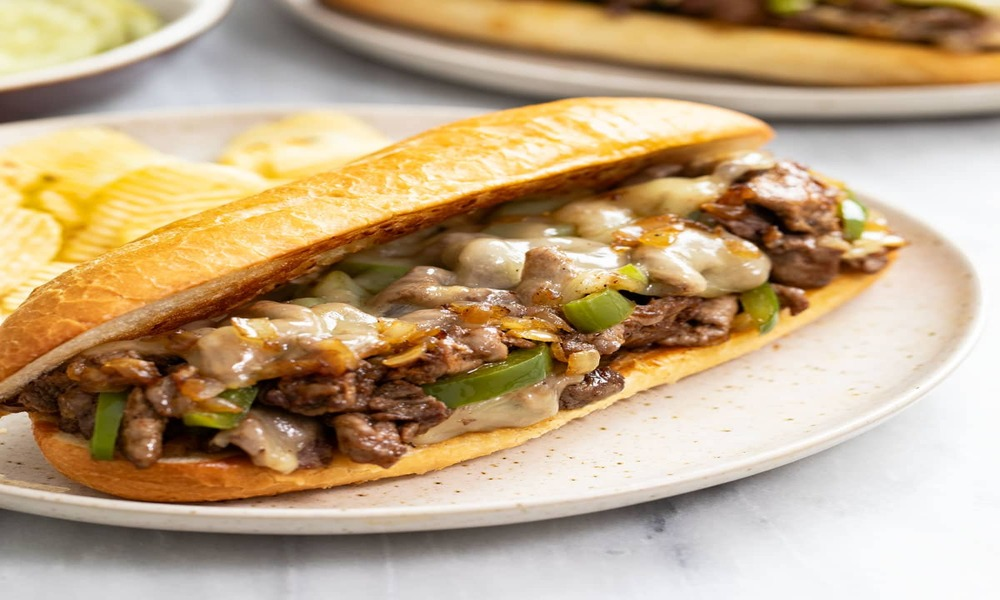

← Back to Recipes
Classic Philly Cheesesteak
Time: 15 minutes | Serves: 2 | Difficulty: Easy

Ingredients
- 1 lb ribeye or sirloin steak, thinly sliced
- 4 hoagie rolls
- 8 slices provolone or American cheese
- 1 large onion, sliced
- 1 green bell pepper, sliced
- Salt, pepper, and oil
Steps
- Heat oil in a skillet and sauté onions and peppers until soft.
- Add thinly sliced steak and cook until browned.
- Season with salt and pepper.
- Top with cheese and let it melt.
- Serve on toasted hoagie rolls.